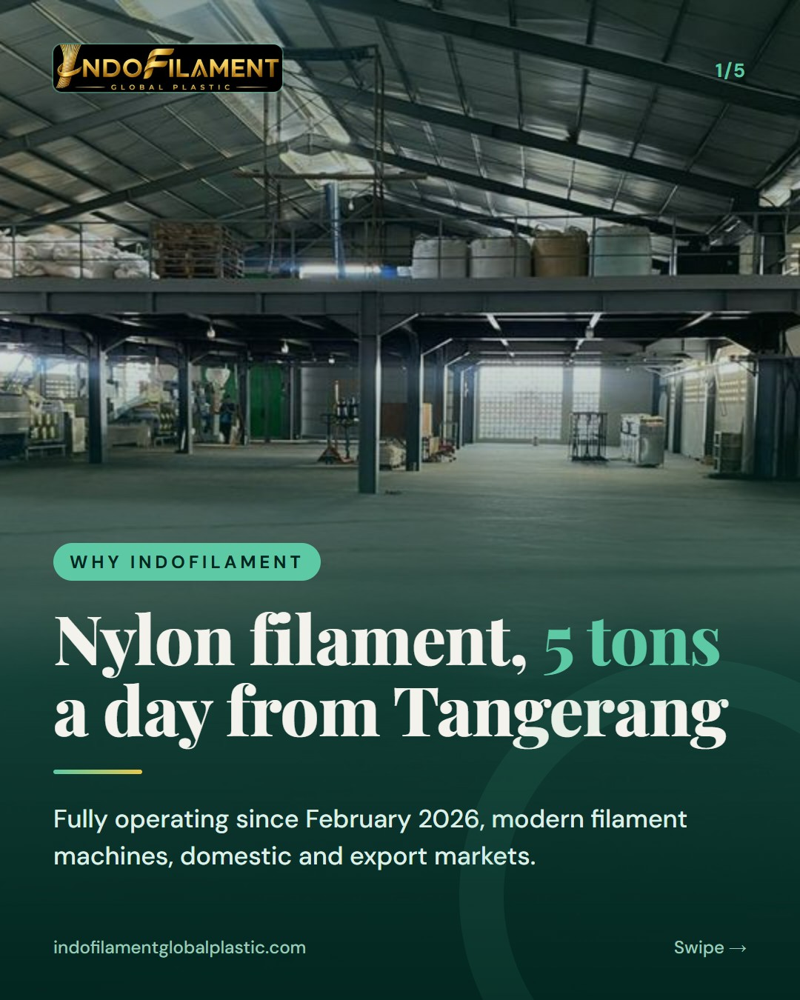
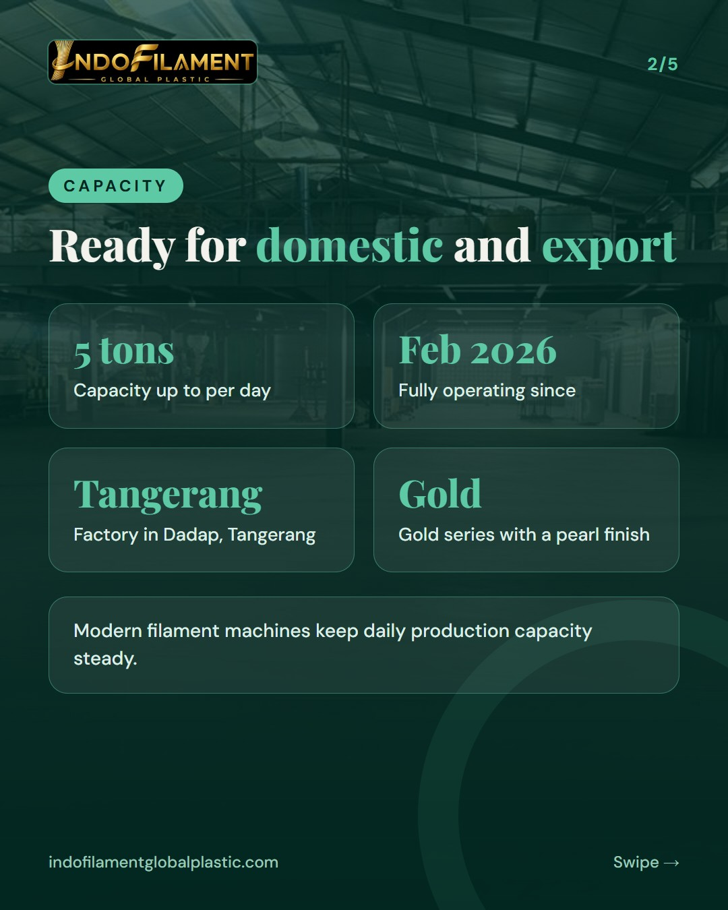
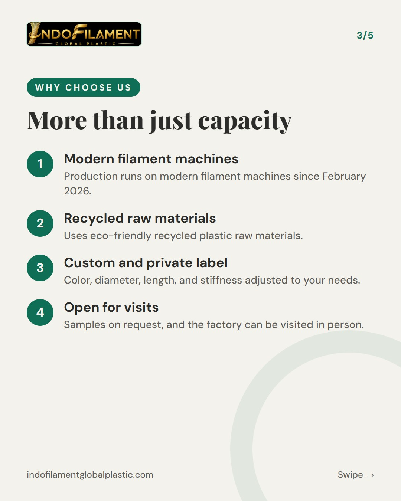
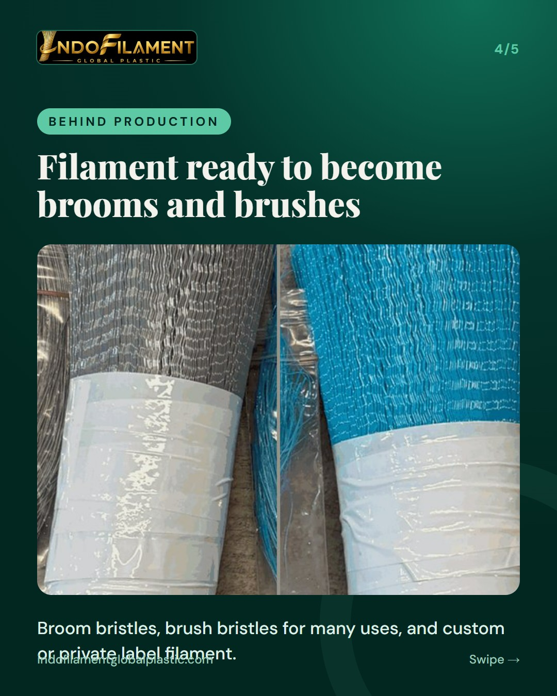
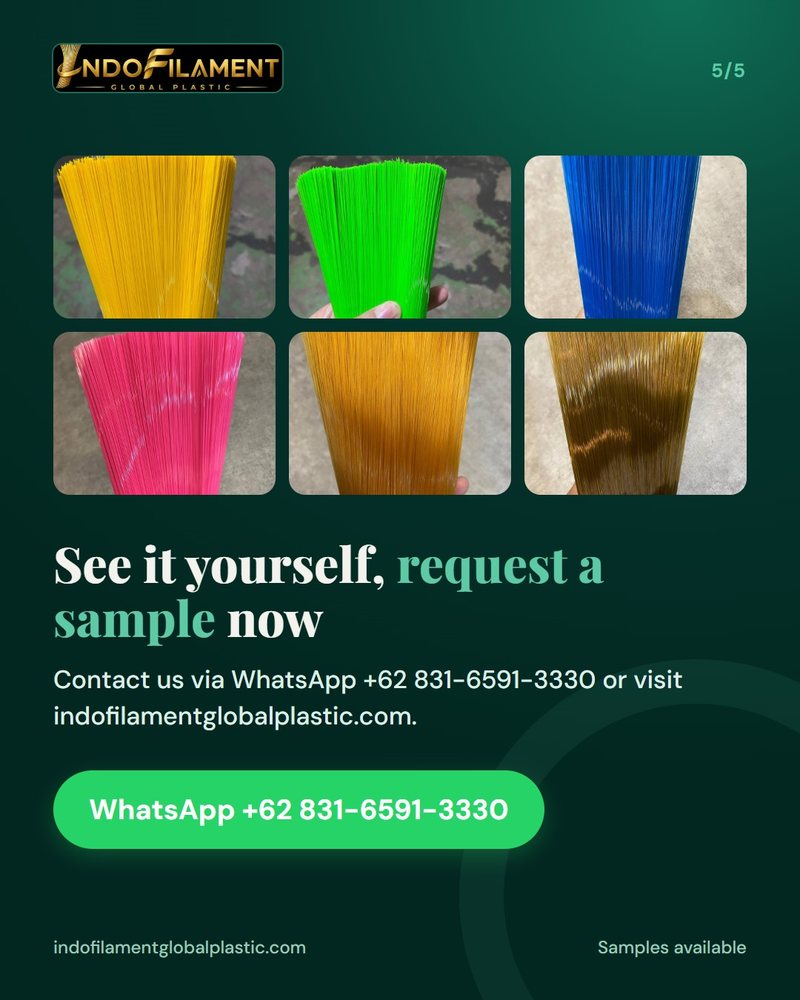

Why Indofilament: capacity of up to 5 tons per day, factory in Tangerang





Our production capacity is up to 5 tons per day, and everything is made at our factory in Dadap, Tangerang. 🏭 Indofilament Global Plastic has been fully operating since February 2026 with modern filament machines. We produce broom and brush bristles for floor, toilet, dish, laundry, washing machine, nail, hair, and paint brushes, up to industrial brushes. Colors range from yellow, green, blue, and pink to the Gold series with a pearl finish. Other colors such as red, purple, orange, black, white, or custom can also be ordered. Our raw material is eco-friendly recycled plastic. For OEM and private label needs, diameter, length, and stiffness can be adjusted. Curious about the quality? Request a sample via WhatsApp +62 831-6591-3330 or DM us. Our factory is also open for visits. ✨ #broomfilament #brushfilament #nylonfilament #madeinindonesia #Tangerang #privatelabel #OEM #recycledmaterials #ecofriendly #broommanufacturer